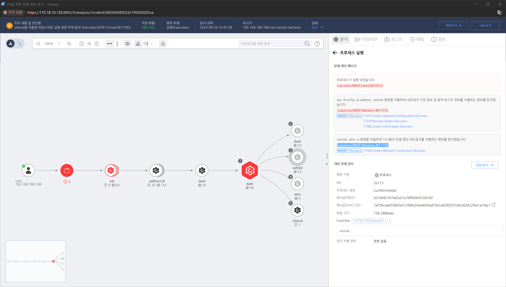

MITRE ATT&CK 액션을 기준으로 대응 방안을 작성

네트워크 연결 탐색 활동을 감지하기 위해 시스템에서 발생하는 네트워크 트래픽을 분석합니다. 비정상적인 연결 시도나 네트워크 스캐닝 활동이 있는지 확인합니다.
Wireshark나 NetFlow와 같은 도구를 사용해 비정상적인 네트워크 패킷과 연결 시도를 캡처하고 분석합니다.
공격자가 netstat, ss, ifconfig 등과 같은 명령어를 실행하여 네트워크 연결 정보를 수집했는지 확인하기 위해 시스템 로그를 분석합니다.
공격자가 어떤 네트워크 연결 정보를 수집했는지 확인하기 위해 현재 활성화된 네트워크 연결 세션을 조사합니다.
공격자가 네트워크 정보를 수집하고 추가적으로 액세스하려는 시도가 감지되면, 해당 연결을 즉시 차단합니다.
시스템에서 비정상적인 네트워크 연결 탐색을 수행한 프로세스를 식별하고, 해당 프로세스를 분석합니다.
네트워크 탐색에 사용된 악성 프로그램이나 스크립트를 식별한 후 제거합니다.
메모리 덤프를 분석하여 공격자가 네트워크 연결 정보를 수집하기 위해 사용한 툴이나 명령어를 확인합니다.
로그 파일이나 임시 파일을 조사하여 네트워크 연결 정보가 기록되었는지 확인하고, 공격자가 수집한 데이터를 추적합니다.
공격자가 시스템의 네트워크 연결 정보를 수집하고 추가적인 공격을 시도하려는 것이 확인될 경우, 해당 시스템을 네트워크에서 격리하여 추가 피해를 방지합니다.
피해 시스템을 복구하고, 네트워크 탐색에 사용될 수 있는 서비스나 프로세스를 비활성화하거나 제한합니다.
네트워크 트래픽 필터링
IDS/IPS 설정
필요한 포트만 열기
원격 관리 제한
최소 권한 원칙 적용
관리자 권한 제한
네트워크 연결 관련 이벤트 로그 활성화
SIEM 사용
Action 실행시 함꼐 영향을 받는 다른 Techniqes
| ATT&CK |
|---|
| T1049.000 |
| D3FEND |
|---|
| D3-NTA Network Traffic Analysis |
| D3-NTF Network Traffic Filtering |
| D3-ITF Inbound Traffic Filtering |
| D3-OTF Outbound Traffic Filtering |